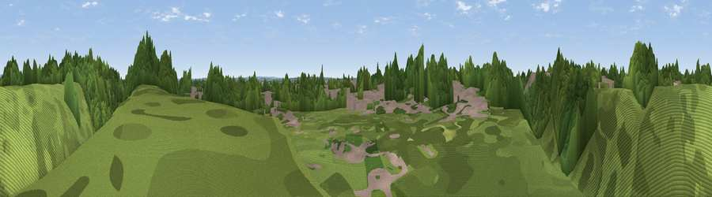

Viewpoint near Woodley
#46361 in England · top 100% of its area beats it · near WoodleyWhere it is
The exact computed spot (SU 75633 74212). Click the marker for map links.
The view, rendered

A 360° render of this exact spot computed from the terrain model, tree cover and land cover — summer colours, afternoon light, calibrated against photographs of famous viewpoints. Real trees, hedges and buildings will differ in detail.
The panorama
Grey silhouette: terrain skyline in each direction (720 bearings, Earth curvature and refraction included). Dashed green: skyline with trees (+15 m) and buildings (+8 m) as obstacles. Blue strip: how far the ground is visible on each bearing.
Where the view opens
Wedge length = distance to the farthest visible ground on that bearing (vegetation-aware). Rings at 10, 25 and 50 km.
What fills the view
99% woodland
Angular shares of the visible panorama (visual magnitude), not map area. Landscape diversity 0.02 (0–1 Shannon).
Key numbers
More beautiful places nearby
The staircase of upgrades: each row has a higher view potential than everything closer. Driving times are estimates from straight-line distance, calibrated against real road routing — check an actual route before setting out.
| Place | Direction | Drive | Score |
|---|---|---|---|
| Viewpoint near Woodley | E · 2 km | ~5 min | 27.3 |
| Viewpoint near Dunsden Green | NW · 3 km | ~7 min | 30.8 |
| Viewpoint near Lower Shiplake | NNE · 7 km | ~14 min | 38.8 |
| Viewpoint near Kiln Green | NE · 8 km | ~16 min | 44.4 |
| Viewpoint near Mapledurham | WNW · 8 km | ~16 min | 44.6 |
| Viewpoint near Knowl Hill | NE · 10 km | ~19 min | 46.3 |
| Viewpoint near Mapledurham | WNW · 10 km | ~19 min | 46.6 |
| Viewpoint near Theale | W · 10 km | ~20 min | 48.1 |
51.46184, -0.91270 · source: osm viewpoint · position refined by local search. Computed location — check access rights before visiting.